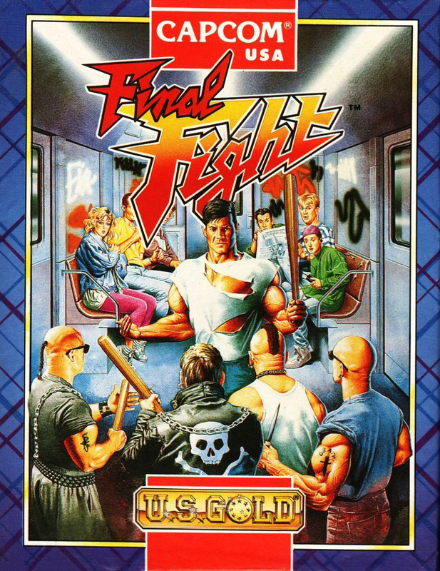
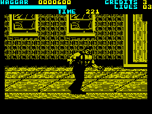

Final Fight


{kind=link}

| Publisher: | US Gold |
| Price: | £11.99 |
| Year: | 1991 |
| Source: | CRASH, Issue 93 |
 Civic duties take on a whole new meaning for Mike Haggar, new Mayor of Metro City (2CV City wouldn’t have the same ring, would it?) in this fast moving beat-’em-up, bash-’em-up, bags-of-ouch struggle! NICK ROBERTS takes a trip to the future to join the action...
Civic duties take on a whole new meaning for Mike Haggar, new Mayor of Metro City (2CV City wouldn’t have the same ring, would it?) in this fast moving beat-’em-up, bash-’em-up, bags-of-ouch struggle! NICK ROBERTS takes a trip to the future to join the action...
On becoming Mayor, Haggar has put his life of mindless violence on the street fighting circuit behind him — until daughter Jessica is kidnapped by the brutal Mad Gear gang and held for ransom. What’s he to do? Call in the SAS? Shrug his shoulders and sigh? No! ‘Cos he’s tough, mean and don’t take no nonsense from no-one! So, he dons his size 12 Doc Martens and gets his street fighting friends together to get her back in this — the final fight (hence the title!).

You can control either Haggar or his sidekicks, Cody and Guy, and you can play the game as a one or two-player battle. They’re all formidable fighting machines and pretty nifty with a punch.
Looking at the screenshots you can see how big everything is. And surprisingly, the speed isn’t bad at all. I mean, it’s not super fast and zippy but it’s quick enough to be very playable. The only time things slow down a bit too much is when the screen scrolls to a further location — but when it does you’re generally not involved in a fight scene (so that’s OK).
STREET TOUGH

his John Travolta impressions specially
for Big Bull (the one with a small
elephant stuffed up his shirt!)
Life on the streets, is tough. Everyone’s got it in for you, even the cops! The opponents come in all shapes and sizes but have one thing in common — they’re all BIG! Weirdos in the game include a nutter in a Batman suit, a bloke with one hell of a beer belly (I told you Nick was there — Ed) and someone called 2P! (obviously a bit of small change!)
To better the baddies you can pick up knives, pipes and Molotov Cocktails (petrol bombs if you’re not up on the street fighting lingo!) to throw at anyone who takes your fancy, as well as battering them with fists and feet. Knocking off the street scum is peanuts though, compared to facing the big, end-of-level hard nuts. Sinister Samurai swordsmen and evil giants need a bit more than a spank on the botty to stop them crushing you! (No, a wet haddock won’t help either).
LOOK AT THE SIZE OF THAT THING!
People who moan that Speccy graphics are tiny and boring should take a good butchers at Final Fight. The character sprites fill half the screen just like the arcade machine. The backgrounds to the many levels are detailed and impressive. Some even have animation as you run along, as in the subway section with trains pulling up behind you. Dustbins, crates and telephones dotted along your path can be picked up and smashed to smithereens! This is mindless violence, I know, but it often reveals handy hidden weapons.
Fighting is the same old affair seen in many a beat-’em-up. Waggling the joystick (which can really make your hand ache after a while,if you know what I mean) with or without the fire button, gives different moves, including jumps, back kicks and mega punches. The difficulty setting is just right, with beating an opponent just a matter of perseverance with a lead pipe! Tough, eh?
I’m usually not very impressed with beat-’em-ups as programmers usually fall into the trap of producing mediocre games with nothing new to offer. Final Fight is different. With its detailed, gigantic graphics and loadsa whacky enemies it’s bound to be a real winner with all beat-’em-up fans, even I loved it ‘cos I pretended it was Corky that I was duffing up!
NICK — 89%

Wow! These guys are mega — the sprites in Final Fight are whoppers. They certainly shift as they kick ass and ensure the Mad Gear gang pay for kidnapping Jessica. The arcade version is unknown to me, but after playing the computer incarnation I’ll certainly be searching it out. OK, you may say, this is just another vigilante beat-’em-up. True, but even though the sprites are monochrome the attention to detail is excellent. The mugshots and presentation screens in the title sequence are great and the varied backdrops score highly in my books — there’s nothing worse than trudging round a game with samey looking settings. As with a lot of beat-em-ups, the going is tough to start with (the timer doesn’t help), but after a while you can merrily punch any attacker’s lights out, no probs. Final Fight is a mighty thumbs for US Gold. Excellento!
MARK — 91%
RATING
Whopping graphics add that extra sparkle and make a basic beat-’em-up a winner!
| Presentation: | 88% |
| Graphics: | 91% |
| Sound: | 84% |
| Playability: | 89% |
| Addictivity: | 87% |
| Overall: | 90% |